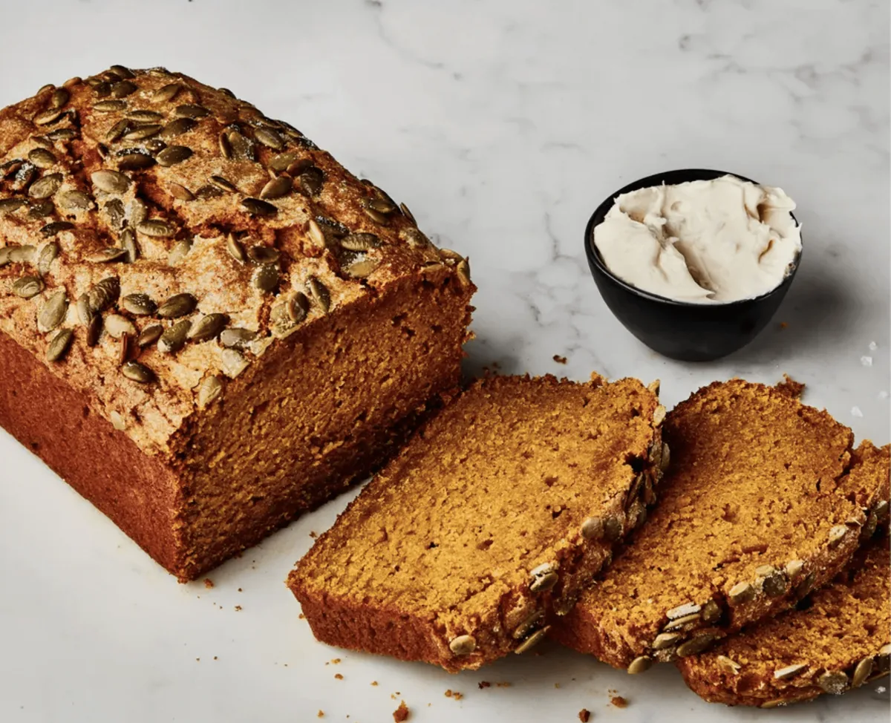

Pumpkin Bread with Salted Maple Butter
A sweet moist quick bread made with pumpkin. Paired with salted maple butter.
INGREDIENTS
Tap items to check offINSTRUCTIONS
Tap a step to mark complete1. Preheat oven to 325°. Lightly coat a 9x5" loaf pan with nonstick spray. Line bottom of pan with parchment, leaving a generous overhang on both long sides.
2. Whisk flour, cinnamon, kosher salt, baking powder, baking soda, nutmeg, and cloves in a medium bowl.
3. Whisk eggs, pumpkin purée, ginger, and 1 1/2 cups sugar in a large bowl. Stream in oil, whisking constantly until mixture is homogeneous. Gently fold half of dry ingredients into egg mixture until no dry spots remain. Repeat with remaining dry ingredients.
4. Transfer batter to prepared pan; smooth top with a spatula. Scatter pumpkin seeds over batter, pressing lightly to adhere. Sprinkle seeds with remaining 1 Tbsp. sugar. Bake bread, rotating pan once halfway through, until a tester inserted into the center comes out clean, 80–90 minutes.
5. Let cool slightly, then run a knife or small offset spatula around pan to help loosen bread. Using overhang, transfer bread to a wire rack and let cool.
1. Using an electric mixer on medium-high speed, beat butter in a large bowl, scraping down sides, until light and fluffy, 5–6 minutes. Add maple syrup and ¾ tsp. sea salt and beat, scraping down sides of bowl once more, just until incorporated.
2. Transfer maple butter to a small bowl; season with more sea salt.
Maple butter can be made 5 days ahead. Cover tightly with plastic wrap and chill. Let come to room temperature before using.